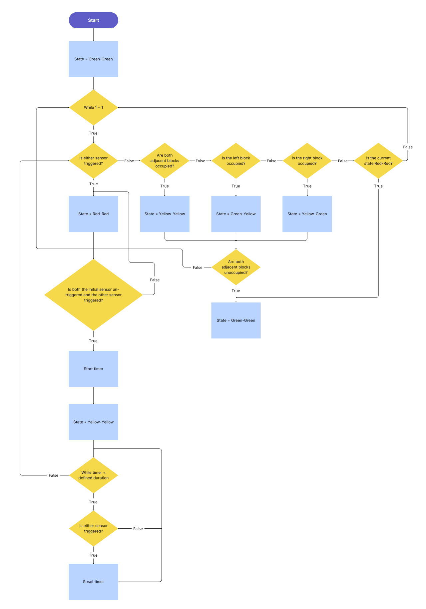
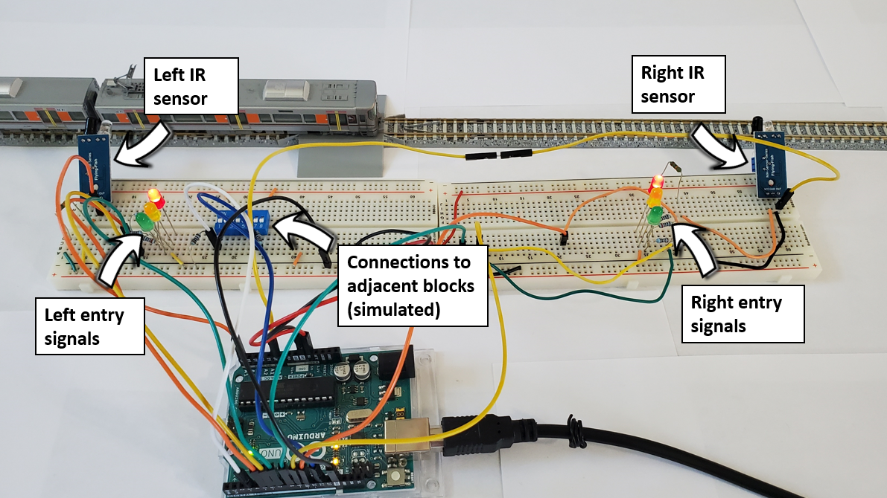

Automatic Block Signalling for a Model Railway
Background
An integral part towards achieving safe railway operation is to have a signalling system that prevents unsafe train movements. Key functions can include ensuring a safe separation distance between trains and prohibiting trains from taking a conflicting route, such as a section of track that is already occupied. Signalling systems are of particular interest to me because they require integration of several components, from train detection to robust control algorithms.
I was preparing for my IRSE Professional Exam (railway systems engineering) during the summer of 2023, so I thought it was a good time to try to create a small signalling system for a model railway. The technical requirements for the project were as follows:
- Be able to detect the presence of trains within a defined block section
- Enable LED signals to accurately display the state of a block section (e.g., occupied or vacant)
- Integrate sensors that did not require significant modification of the model railway
- Make a modular system that can easier be extended for longer lengths or varying sizes of block sections
System Design
I did some research to see if anyone else had tried to use Arduino as part of a railway signalling system. One of the most promising applications was from a YouTube video that used infrared (IR) sensors as triggers for when a train enters a section of track, referred to as a block. IR sensors can be placed adjacent to the track, whereas another popular sensor type, current sensors, required modifications to the track to electrically isolate each section. Based on this advantage, I chose to incorporate IR sensors into my design.
Each block section had two IR sensors, one at each end. If either sensor was triggered, it meant that a train had entered the block. By examining which sensor was activated first, the Arduino could determine the direction from which the train entered the block. This was the entry sensor. Leading on from that, the system could determine when the train left the block section by noting the moment when the entry sensor was no longer triggered and the other sensor for that block, the exit sensor, was initiated. Of course, depending on the direction of travel, the roles of entry and exit sensor switch.
Additionally, voltage level logic was used as a basic form of communication between blocks to let adjacent blocks know that they are occupied, i.e., a train is present in that section. This is critical because adjacent blocks can convey this information to the train via signals, informing the (nonexistent in this case) driver to perhaps adopt a slower speed limit since they may have to stop by the time the train reaches the adjacent section. Combining all of the aforementioned logic, each block could be said to be in one of five states at any given point. Each state shows whether trains from each direction can safety enter the block. Please refer to Table 1 for an overview of the possible states and Fig. 1 for a flowchart describing how the system moves from one state to another.
| State | Meaning | Can trains enter from the left? | Can trains enter from the right? |
|---|---|---|---|
| Green-Green | Block and adjacent blocks are clear | Yes | Yes |
| Green-Yellow | Block is clear, but the block to the left is occupied | Yes | Yes, but with caution/reduced speed |
| Yellow-Green | Block is clear, but the block to the right is occupied | Yes, but with caution/reduced speed | Yes |
| Yellow-Yellow | EITHER block is clear but both adjacent blocks are occupied OR block was only recently cleared | Yes, but with caution/reduced speed | Yes, but with caution/reduced speed |
| Red-Red | Block is occupied | No | No |

The physical wiring involved for a single block section required two IR sensors, LEDs for signals, along with connections to adjacent blocks for transmitting and receiving states. Since my demo setup had only one block section, I simulated connections to neighbouring blocks using a DIP switch block. Fig. 2 illustrates the entire setup for a single block.

Software Design
The Arduino code for this project revolved around switching from one state to another based on the sensor input.
Upon startup, the system gets the nominal value of the IR sensors with no train present. This is done by taking the average value of 1000 sensor samples. When figuring out if a sensor has been triggered by a passing train during regular operation, the difference between the nominal sensor value and current sensor value is calculated. The absolute value of this number is then compared to a set threshold. If the difference is greater than the threshold, a train has been detected.
The state of the system at any given time depends on both the previous state as well as the sensor input. States are saved in an enum, and the enum element changes based on the logic seen in Fig. 1. For each state, an appropriate combination of LEDs are enabled (similar to a traffic light) using a switch expression and adjacent blocks may receive a voltage signal. Several optimizations were done throughout the testing phase, such as removing redundant sensor readings.
The full code can be seen here.
Challenges and Limitations
Connections
While I only modelled a single block for my demo, the amount of wiring was quite large. Although the system design does allow for additional blocks to be daisy-chained together, the wiring would again be a challenge. Modifications to the code could allow a single Arduino MCU to control several blocks (unlike the current implementation where each block requires an Arduino), which would reduce some of the required connections.
IR Sensors
By far the most difficult aspect of this project was ensuring that the IR sensors behaved in a reliable manner. Some of them would often get stuck in a non-triggered or permanently-triggered state, while others would not provide robust readings. The IR sensors also work as a pair for each block, which means that both of them need to be activated by a train during regular operation. If a train enters a block and reverses out the same way, thereby only making contact with a single IR sensor, that block will not proceed to the clear state. Other sensor types, such as a current sensor, can deal with situations like these (and simplify the state switching logic), albeit at the cost of more intrusive installations.
It should be mentioned that in a real-world setting, IR sensors would definitely not be chosen, as they can be triggered by a trains, falling leaves, or almost anything else. Many signalling systems therefore rely on track circuits or axle counters as better sensing mechanisms.
Time Delay
Presently, there is a 250 ms delay in the while loop of the program, which was added to make debugging easier so that text in the serial monitor could be read. However, for practical use, this delay could be omitted or reduced to 100 ms or less. The degree to which the delay can impact system operation depends on the track layout, specifically the smallest amount of time it takes for a train to enter and exit a block.
Conclusion
Real-life signalling systems are notoriously complex, and for good reason as railways depend on them to safely operate without accidents. While my project scratched the surface of what is required by a signalling system, it performed very well for my model train layout. Once sensor integrity issues were sorted out, detection worked reliably, and the algorithm was able to switch between states in a safe, predictable manner. Please refer to Fig. 3 to see a demo of the final system!
Figure 3. A demonstration of the signalling system.